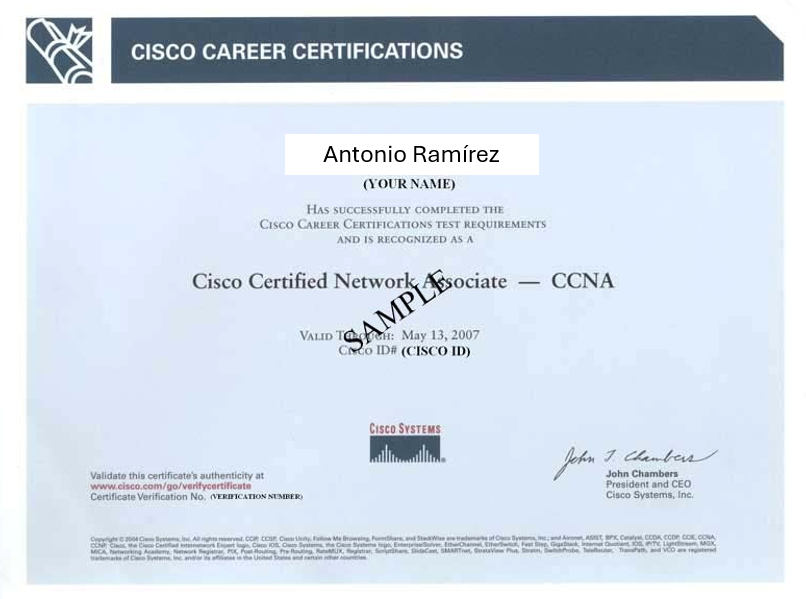
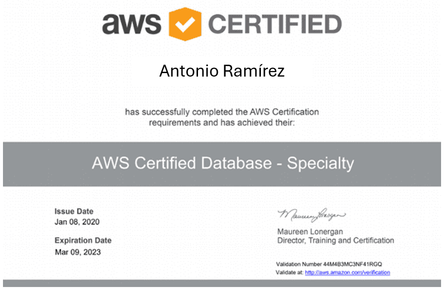
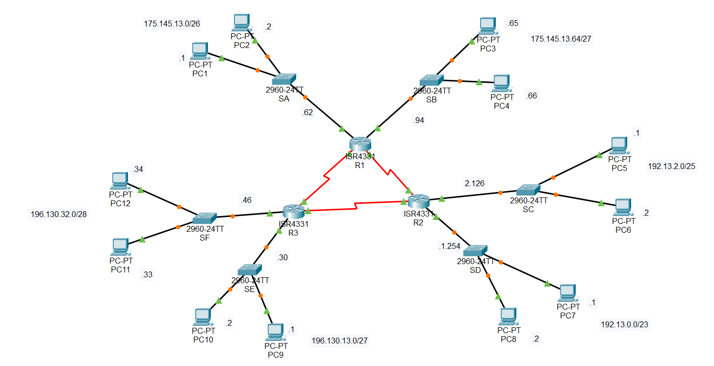
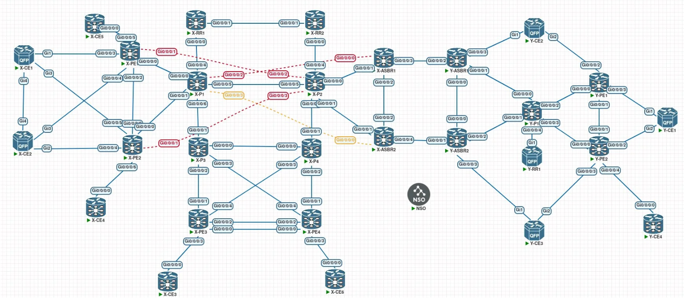

Portafolio- Antonio Ramírez
Evidencia de proyectos académicos y personales
A continuación se muestran evidencias visuales de los proyectos desarrollados durante mi formación académica en Ingeniería en Telemática, así como certificaciones relevantes.
Certificaciones


Formación orientada a arquitectura en la nube y desarrollo de aplicaciones.
Implementación de Red

Implementación de topología empresarial con VLANs, enrutamiento dinámico y configuración de dispositivos Cisco en entornos físicos y simulados.
Propuesta de Red

Configuración y validación de protocolos de enrutamiento de nivel empresarial en sistemas operativos neutrales (GNS3).
Implementación de un Sistema de Comunicaciones
Diseño básico de transceptores y dispositivos de administración de una red inalámbrica y análisis espectral básico.